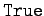

Mathematica nutzt für die Programmierung die bekannten Schleifen- und Kontrollstrukturen IF, FOR, WHILE, DO. Hierzu gehören u.a. die beiden Befehle
| (20.26a) |
und
| (20.26b) |
Der erste Befehl bewirkt die Evaluierung des Ausdruckes ausdr, wobei i den Wertebereich von i1 bis i2 in Schritten di durchläuft. Läßt man di weg, so werden Einer-Schritte verwendet. Fehlt noch , so wird bei 1 begonnen.
Der zweite Befehl evaluiert den Ausdruck, solange test den Wert  besitzt.
| Beispiel |
|
Zur Berechnung eines Näherungswertes von e2 werde die Reihenentwicklung der Exponentialfunktion benutzt: |
 |
(20.27) |
Die -Schleife evaluiert entsprechend einer vorgegebenen Anzahl, die -Schleife dagegen so lange, bis die vorgebene Bedingung ungültig wird.
Mathematica bietet insbesondere für die Programmierung die Möglichkeit, Variable lokal zu definieren und zu nutzen. Das geschieht mit der Anweisung
| (20.28) |
Die in der Liste eingeschlossenen Variablen oder Konstanten sind bezüglich ihrer Nutzung im Modul lokal, die ihnen zugewiesenen Werte sind außerhalb des Moduls nicht bekannt.
| Beispiel A |
|
Es ist eine Prozedur (Funktion) zu definieren, die die Summe der Quadratwurzeln von 1 bis n berechnet. |
| (20.29) |
Der Aufruf liefert dann z.B. 112.083.
Eine besondere Stärke der Programmiermöglichkeiten in Mathematica ist die Nutzung funktionaler Methoden der Programmierung, die mit den Operationen und weiteren möglich werden.
| Beispiel B |
|
Beispiel A läßt sich funktional für den Fall, daß eine Genauigkeit auf 10 Ziffern gefordert ist, folgendermaßen schreiben: |
Für Einzelheiten muß auf Lit. 20.6 verwiesen werden.